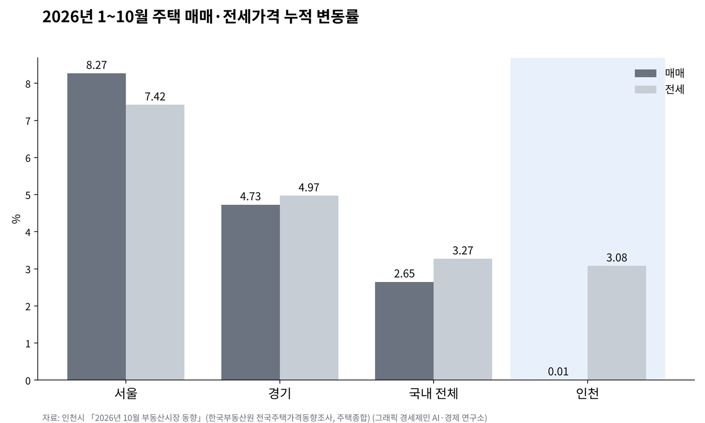
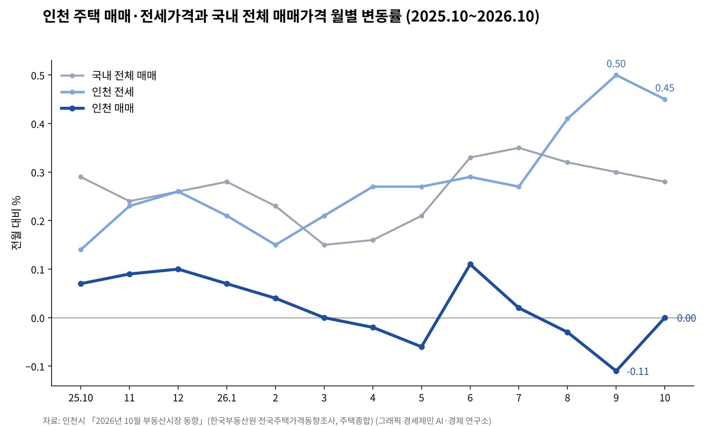

인천 주택 매매가격 1~10월 0.01% 제자리, 전세가격 3.08% 상승
서울 8.27%·경기 4.73% 오를 때 인천 0.01%
9월 매매거래 3134건, 5년 평균보다 17.8% 적어
AI경제저널=김갑봉 기자 | 인천 주택 매매가격이 올해 1~10월 0.01% 오르는 데 그쳤다. 같은 기간 전세가격은 3.08% 올랐다. 두 수치는 인천시가 24일 낸 「2026년 10월 부동산시장 동향」에 실린 한국부동산원 월간 전국주택가격동향조사에서 아파트·연립주택·단독주택을 합친 주택종합 1~10월 누계다.
같은 기간 매매가격은 서울 8.27%, 경기 4.73%, 국내 전체 2.65% 올랐다. 전세가격은 서울 7.42%, 경기 4.97%, 국내 전체 3.27% 올랐다.
인천은 지난해 1~10월 매매가격이 0.94%, 전세가격이 0.45% 내렸다. 올해 인천 주택 매매가격은 4월(-0.02%), 5월(-0.06%), 8월(-0.03%), 9월(-0.11%) 네 달 내렸고 3월과 10월은 보합이었다. 10월은 9월 하락에서 보합으로 돌아섰다.
올해 1~10월 전세가격을 유형별로 보면 아파트는 4.58% 올랐고 연립주택은 0.16% 내렸다.
10월 인천 평균 주택 매매가격은 약 3억1882만원, 평균 전세가격은 약 2억1037만원이다. 한국부동산원은 이 조사가 지수 산출에 맞게 설계돼 평균·중위가격은 참고 사항으로 쓰라고 안내한다.

1~10월 매매 연립 1.60% 하락, 아파트 0.82% 상승
인천 주택 매매가격을 유형별로 보면 1~10월 아파트는 0.82%, 단독주택은 0.86% 올랐다. 연립주택은 1.60% 내렸다. 10월 한 달만 보면 아파트는 0.08% 올랐고 연립주택은 0.15% 내렸다.
10월 남동구 0.23% 하락, 부평구 0.20% 상승
10월 구별로는 부평구(0.20%), 연수구(0.10%), 검단구(0.09%), 서해구(0.06%)가 올랐다. 제물포구(-0.01%), 계양구(-0.07%), 미추홀구(-0.11%), 영종구(-0.12%), 남동구(-0.23%)는 내렸다.
남동구는 만수·간석동 위주로 내렸고 부평구는 삼산·부개동 대단지 위주로 올랐다고 시는 밝혔다.
10월 전세 0.45%·월세 0.52% 상승
10월 전세가격지수 변동률은 0.45%로 9월(0.50%)보다 상승폭이 0.05%포인트 줄었다.
구별로는 연수구(0.77%), 남동구(0.74%), 영종구(0.53%), 검단구(0.50%), 계양구(0.50%) 순으로 올랐다. 서해구(0.46%), 제물포구(0.32%), 부평구(0.32%), 미추홀구(0.03%)가 뒤를 이었다.
남동구는 10월 매매가격이 0.23% 내려 아홉 구 가운데 가장 많이 떨어졌다. 같은 달 전세가격은 0.74% 올라 연수구 다음으로 많이 올랐다.
월세통합가격지수 변동률은 0.52%로 9월(0.54%)보다 상승폭이 0.02%포인트 줄었다.
구별로는 서해구(0.93%), 검단구(0.69%), 남동구(0.54%), 부평구(0.47%), 영종구(0.45%) 순으로 올랐다. 미추홀구(0.42%), 연수구(0.42%), 제물포구(0.41%), 계양구(0.40%)까지 모든 구에서 올랐다. 인천 월세가격은 1~10월 3.70% 올랐다.

9월 인천 매매거래 1년 전보다 5.0% 감소, 서울 33.4% 감소
9월 인천 주택 매매거래량(신고일 기준)은 3134건으로 8월(2930건)보다 204건(7.0%) 늘었다. 지난해 9월(3300건)보다 5.0%, 5년 평균보다 17.8% 적다.
9월 매매거래량을 1년 전과 견주면 서울은 33.4%, 경기는 12.7%, 국내 전체는 22.7% 줄었다. 5년 평균과 견주면 서울은 5.1% 적고 경기는 3.0% 많다.
구·군별로는 부평구(565건), 남동구(465건), 연수구(434건), 미추홀구(374건), 서해구(368건), 계양구(342건) 순이었다. 검단구(297건), 영종구(117건), 제물포구(97건), 강화군(68건), 옹진군(7건)이 뒤를 이었다.
같은 달 전월세 거래량은 1만929건으로 8월(1만1230건)보다 301건(2.7%) 줄었다. 지난해 9월(1만3541건)보다 19.3%, 5년 평균보다 4.2% 적다.
이원주 시 도시계획국장은 "10월 인천 주택 매매가격지수는 보합세로 전환했으며 전세는 연수구와 남동구 중심으로, 월세는 서해구와 검단구 중심으로 임차 수요가 이어지며 가격이 올랐다"고 설명했다.
참고문헌
- 「인천시, 10월 주택 매매가 보합… 전·월세는 상승세 지속」, 인천광역시 토지정보과 보도자료, 2026.11.24., https://www.incheon.go.kr/IC010205/view?repSeq=DOM_0000000016076132
- 「2026년 10월 부동산시장 동향」, 인천광역시 토지정보과(같은 보도자료 첨부 참고자료), 2026.11.24., https://www.incheon.go.kr/IC010205/view?repSeq=DOM_0000000016076132
- 「전국주택가격동향조사 2026년 10월 지역별 매매가격지수 변동률 - 아파트」, 한국부동산원 부동산통계정보시스템(R-ONE) 첫 화면, 2026.11.26. 열람, https://www.reb.or.kr/r-one/portal/main/indexPage.do
- 「전국주택가격동향조사」 통계 개요, 한국부동산원, 2026.11.26. 열람, https://www.reb.or.kr/reb/cm/cntnts/cntntsView.do?mi=10333&cntntsId=1033&statId=S234820263
- 「2026년 9월 주택통계」, 국토교통부 주택정책과 보도자료, 2026.10.30., https://eiec.kdi.re.kr/policy/materialView.do?num=288812 (KDI 경제교육·정보센터 게재본)
- 「전국주택가격동향조사」 통계정보, 국토교통부 국토교통 통계누리, 2026.11.26. 열람, https://stat.molit.go.kr/portal/cate/statMetaView.do?hRsId=487
[사진 출처]
- 사진1 김갑봉 촬영, 2026.5.10., 인천 부평구 부평동
- 사진2 김갑봉 촬영, 2025.10.23., 인천 남동구 구월동
- 도표1·도표2 경세제민 AI·경제 연구소 작성, 자료 인천시 「2026년 10월 부동산시장 동향」(한국부동산원 전국주택가격동향조사)
※ 이 기사는 인공지능기자 위민아이(Wemin_AI)와 협력해 작성했습니다.
관련기사
- 인천 전셋값 올해 4.71% 상승, 집값의 여섯 배
- [도시계획·부동산] 인천 아홉 구를 같은 16주로 다시 셌다, 세입자 부담은 영종·계양·연수가 컸다
- 구월지구 B1구역, 인천에서 가장 높은 용적률 430% 받았다
- [한국경제 불편한 진실②] 인구 줄어도 집값은 오른다, 도쿄와 서울이 보여 준 것
저작권자 © AI경제저널 무단전재 및 재배포, AI학습 및 활용 금지